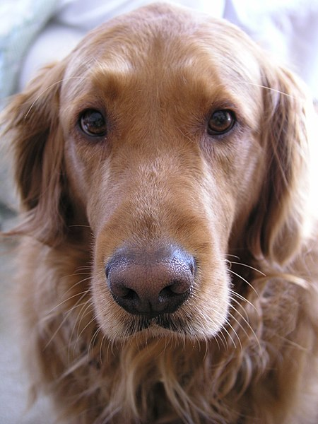
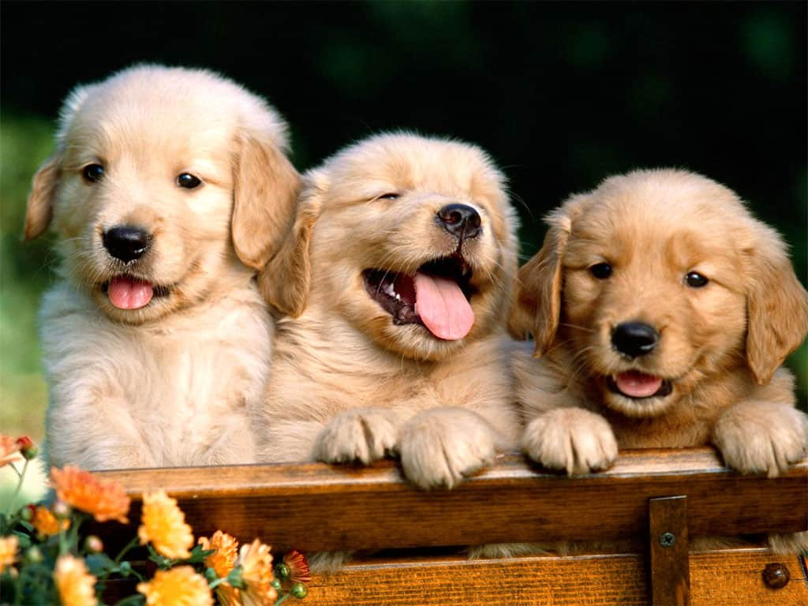

Опис породи
Золотистий ретривер симетричний, гармонійний, активний, сильний, з врівноваженими рухами; міцний, з доброзичливим поглядом.
-
Поведінка і темперамент
Слухняний, розумний, з природними здібностями до роботи; добродушний, доброзичливий і впевнений.
-
Будова тіла
Голова пропорційна з відточеними лініями. Череп широкий, не грубий. Перехід від чола до морди: добре позначений.
Мочка носа переважно чорна. Морда потужна, широка і глибока. Довжина морди приблизно дорівнює довжині від переходу до потиличного бугра. Міцні щелепи з відмінним рівномірним, регулярним ножицеподібним прикусом, при цьому верхні різці щільно закривають нижні, зуби стоять в щелепі вертикально. Очі темно-карі, широко розставлені, повіки темні. Вуха середнього розміру, посаджені приблизно на рівні очей.
Шия гарної довжини, без підвісу і мускулиста.
Корпус збалансований. Спина: рівна лінія верху. Поперек міцний, м’язистий, короткий. Груди глибокі в області серця. Ребра глибокі, добре зведені. Хвіст розташований на рівні лінії спини, дістає до скакальних суглобів; без вигину на кінчику хвоста.
Передні кінцівки: передні кінцівки прямі, з міцним кістяком. Плечові кістки: плечі добре відведені назад, лопатки довгі. Плечі по довжині рівні лопаткам, внаслідок чого кінцівки стоять добре під корпусом. Лікті щільно прилягають до корпуса.
Задні кінцівки міцні та мускулисті. Колінні суглоби з хорошими кутами. Гомілки гарної довжини. Скакальні суглоби низько розташовані, плюсни прямі при огляді ззаду, не вивернуті ні усередину, ні назовні. Коровій постав вкрай не бажаний. Лапи круглі, котячі. Рухи сильні, з гарним поштовхом. Прямолінійні та паралельні передніми та задніми кінцівками. Крок довгий і вільний, без «гарцювання» (високого підкидання передніх кінцівок).
-
Шерсть
Якість шерсті: пряма або хвиляста з гарним прикрашаючим волоссям, щільний водонепроникний підшерсток.
-
Забарвлення
Будь-який відтінок золотого або кремового, але не рудий і не махагоновий. Кілька білих волосків допустимі, але тільки на грудях.
-
Розмір
Висота у холці: кобелі 56-61 см; суки 51-56 см
-
Недоліки
Будь-яке відхилення від вищеназваних пунктів повинне розглядатися як недолік, оцінка якого має бути в точному співвідношенні зі ступенем цього відхилення.
Історія породи
Корені цієї породи сягають XIX століття і пов'язані з ім'ям англійського аристократа лорда Твідмаута, який жив у Шотландії і присвячував своє дозвілля полюванню. Лорд поставив за мету вивести досконалу породу, що поєднала б усі переваги інших мисливських собак. Як наслідок багаторічної селекційної роботи, шляхом схрещування представників різних порід (прямошерстних ретриверів, низькорослих ньюфаундлендів, водних твід-спанієлів, сетерів) і з'явився собака, що поєднує прекрасне чуття бладхаунда, витривалість сетера, інтелект лабрадора. Свого першого «Голдена» на прізвисько Nous лорд Твідмаут отримав у 1865 році. Порода була зареєстрована в англійському Kennel Клубі в 1903 році як «прямошерстний голден ретривер». У 1911 році прикметник «прямошерстний» було вилучено з назви, і сьогодні ця порода відома у світі як голден ретривер.
Хоча спочатку голден ретривери виводилися для полювання, сьогодні ця порода стала універсальною. Не багато існує інших порід, представники яких виявляють таку ж доброзичливу, м'яку і люблячу натуру, як золотистий ретривер.
Поведінка
Голден — одна з найкращих мисливських порід.
Як більшість мисливських собак, голден легко піддаються дресуванню. Вони дуже слухняні та кмітливі. Завдяки цим якостям, голден є прекрасною спортивною породою.
Голден ніколи не проявить агресію до людей або до інших собак. Заводячи його, можна бути впевненим у власній безпеці. Тому сьогодні їх дуже часто беруть в сім'ї з дітьми.
Застосування
Золотисті ретривери працюють в поліції і в рятувальних службах, шукають наркотики і контрабанду.
Завдяки чудовій зовнішності та кмітливості, золотисті ретривери — улюблена порода рекламних кліпмейкерів і режисерів. Голдени — природжені актори. Перераховуючи фільми, в яких собаками цієї породи були зіграні головні ролі, можна згадати такі: «Дорога додому» (США), «Наполеон» (Австралія), «Пес, на ім'я Брунька» (США), "Марлі та я" (США).
Ще в 1961 році американському психологу Левінсону спала на думку ідея про використання собак в терапевтичних цілях і для реабілітації хворих. І знову виручили ретривери — голден і лабрадор. Покладливий і миролюбний характер у спілкуванні з людьми та тваринами зробив золотистого ретривера першокласним поводирем.
Поліційні собаки й рятувальники, мисливці й лікарі, няньки та компаньйони — ось далеко не повний перелік того, на що здатні ці собаки.